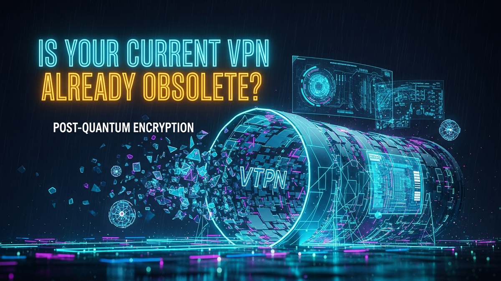

The digital world, as we know it, is built upon a foundation of cryptographic security. From securing your online banking transactions to protecting your personal communications via a Virtual Private Network (VPN), encryption is the invisible shield that keeps your data private and safe from prying eyes. For decades, this shield has proven robust, relying on mathematical problems that are computationally intractable for even the most powerful supercomputers. However, a seismic shift is on the horizon, one that threatens to shatter these long-held assumptions: the advent of practical quantum computing. This isn't science fiction anymore; it's a rapidly approaching reality that demands our immediate attention. The very algorithms underpinning the security of your current VPN – the ones ensuring your anonymity and data integrity – are fundamentally vulnerable to the immense processing power of future quantum machines. The question is no longer if, but when, these machines will emerge, rendering today's most trusted encryption methods obsolete. This article delves into the quantum threat, explores the emerging solutions of Post-Quantum Cryptography (PQC), and helps you understand whether your current VPN is already a ticking time bomb in the face of this cryptographic revolution, urging you to consider the implications for your digital future.
The security of our digital lives, including the privacy offered by Virtual Private Networks (VPNs), rests heavily on the presumed difficulty of solving certain mathematical problems. These problems, such as factoring large numbers or computing discrete logarithms on elliptic curves, are so complex that even the most powerful classical supercomputers would take billions of years to crack them. This computational barrier forms the bedrock of modern public-key cryptography, including algorithms like RSA and Elliptic Curve Cryptography (ECC), which are extensively used for key exchange, digital signatures, and authentication in virtually all secure communications, including VPN tunnels. However, this entire paradigm is on the cusp of being fundamentally disrupted by the rapid advancements in quantum computing technology. Quantum computers operate on principles entirely different from classical computers, leveraging phenomena like superposition and entanglement to perform calculations in ways that are impossible for traditional machines.
The primary algorithms that pose a direct threat to current cryptographic standards are Shor's algorithm and Grover's algorithm. Shor's algorithm, discovered by Peter Shor in 1994, is a quantum algorithm capable of efficiently factoring large numbers and solving the discrete logarithm problem. This capability directly targets the mathematical foundations of RSA, Diffie-Hellman, and Elliptic Curve Cryptography (ECC) – the very algorithms that secure the initial handshake and key exchange within your VPN connection. Once a sufficiently powerful quantum computer running Shor's algorithm exists, it could, in theory, break these public-key cryptosystems with relative ease, effectively compromising the confidentiality and authenticity of past, present, and future communications encrypted with these methods. This means that a malicious actor could intercept encrypted VPN traffic today, store it, and then decrypt it years later once a quantum computer becomes available, a scenario chillingly known as "harvest now, decrypt later."
While Shor's algorithm directly attacks asymmetric encryption, Grover's algorithm, another quantum algorithm, offers a quadratic speedup for searching unsorted databases. While it doesn't break symmetric encryption (like AES-256, commonly used for the actual data payload in VPNs) in the same dramatic way Shor's algorithm breaks asymmetric encryption, it does reduce the effective key length. For instance, a 256-bit AES key would effectively become equivalent to a 128-bit key against a quantum attacker using Grover's algorithm. This means that while AES-256 is generally considered "quantum-resistant" for now, future quantum computers might necessitate even longer symmetric keys or a re-evaluation of its security margin. The timeline for the development of cryptographically relevant quantum computers is uncertain, with estimates ranging from a decade to several decades. However, the critical point is that for data with long-term confidentiality requirements (e.g., government secrets, intellectual property, medical records), the threat is immediate. The data being transmitted through your VPN today could be harvested and decrypted in the future, making the transition to quantum-safe solutions a strategic imperative rather than a distant concern. The foundational reliance of VPNs on classical, quantum-vulnerable cryptographic primitives means that without a proactive shift, their promise of secure and private communication will eventually become a hollow one.
Post-Quantum Cryptography (PQC), often referred to as quantum-resistant cryptography, represents a new generation of cryptographic algorithms designed to withstand attacks from future quantum computers while still being executable on classical computers. Unlike current public-key cryptography, which relies on the difficulty of problems like factoring or discrete logarithms, PQC algorithms are built upon different mathematical foundations that are believed to be hard for both classical and quantum computers to solve. The development and standardization of these algorithms are critical for ensuring the long-term security of digital communications, including those facilitated by VPNs, in a post-quantum world. The National Institute of Standards and Technology (NIST) has been at the forefront of this effort, launching a multi-year, global standardization process to identify and select the most promising PQC algorithms.
NIST's PQC standardization process began in 2016 and has involved several rounds of evaluation, vetting submissions from cryptographers and researchers worldwide. These candidate algorithms fall into several distinct mathematical families, each based on different hard problems:
Virtual Private Networks (VPNs) are designed to create a secure, encrypted tunnel over an insecure network, typically the internet, allowing users to browse privately and access geo-restricted content. The core functionality of a VPN relies on a complex interplay of cryptographic algorithms to establish trust, exchange keys, and encrypt data. Unfortunately, many of the foundational cryptographic primitives used in the initial setup and authentication phases of virtually all modern VPN protocols are precisely what quantum computers, equipped with algorithms like Shor's, are designed to break. Understanding this vulnerability is key to grasping why current VPNs, while secure today, face an existential threat in the quantum era.
The typical VPN connection process involves several critical steps where classical, quantum-vulnerable cryptography plays a central role:
Protect your identity and browse privately with Surfshark One - the all-in-one security suite.
GET 60% OFF SURFSHARK NOWThe transition from classical, quantum-vulnerable cryptography to Post-Quantum Cryptography (PQC) within VPN infrastructures is an immense undertaking, often described as a "cryptographic agility" challenge. It's not merely about swapping out one algorithm for another; it involves redesigning protocols, updating software and hardware, and managing a complex, global migration strategy. The goal is to ensure that VPNs remain secure and functional throughout this transition period and into the quantum era, without introducing new vulnerabilities or disrupting existing services. This path is fraught with significant technical, operational, and financial challenges that require careful planning and coordination across the cybersecurity ecosystem.
One of the primary strategies for a smooth transition is the implementation of "hybrid modes." A hybrid mode involves running both classical (e.g., ECC) and PQC (e.g., CRYSTALS-Kyber) key exchange algorithms in parallel during the VPN tunnel setup. The idea is that the security of the connection would then rely on the stronger of the two algorithms. If the classical algorithm is broken by a quantum computer, the PQC algorithm would still provide security. Conversely, if a flaw is found in the PQC algorithm, the classical algorithm would serve as a fallback. This "belt and suspenders" approach provides an immediate layer of quantum protection without fully committing to a nascent technology, mitigating the risk of unforeseen weaknesses in early PQC implementations. However, hybrid modes introduce overhead: larger key sizes mean increased bandwidth usage during the key exchange phase, and running multiple algorithms can consume more computational resources, potentially impacting performance, especially on resource-constrained devices or high-throughput networks.
The standardization process by NIST is a critical enabler for this transition. Once the final PQC algorithms are selected and published, vendors can begin to integrate them into their products with confidence. However, this process itself has been lengthy, and the algorithms are still relatively new, meaning they have not undergone the decades of public scrutiny and cryptanalysis that current algorithms like RSA and ECC have. This lack of "battle-testing" presents an inherent risk, necessitating a cautious, phased rollout. Interoperability is another major hurdle. For a quantum-safe VPN to function, both the client and server must support the same PQC algorithms. This requires widespread updates across different operating systems, VPN clients, server software, and even network hardware. Coordinating these updates across a diverse landscape of devices and vendors will be a monumental task, potentially leading to fragmentation and compatibility issues during the early stages of adoption.
Furthermore, the migration costs associated with PQC implementation are substantial. Organizations will need to invest in new software licenses, hardware upgrades (if existing hardware cannot handle the larger key sizes or computational demands of PQC), and extensive training for IT staff. The cryptographic agility required also means that organizations must maintain an up-to-date inventory of all cryptographic assets, understand their dependencies, and be prepared to update them regularly. This includes not just VPNs, but also TLS certificates, code signing, and secure boot processes. The "harvest now, decrypt later" threat means that organizations handling long-lived sensitive data cannot afford to wait until quantum computers are fully operational to begin their PQC transition. They must act proactively, starting with cryptographic risk assessments, pilot programs with hybrid solutions, and engaging with their VPN providers and other technology partners to understand their quantum readiness roadmaps. The path to quantum-safe VPNs is a marathon, not a sprint, demanding sustained effort and strategic investment to secure the digital future.
Navigating the transition to Post-Quantum Cryptography (PQC) requires not just an understanding of the threat, but also a proactive engagement with the emerging solutions and tools. While a fully quantum-safe VPN ecosystem is still some years away, significant progress is being made in research, standardization, and early implementation. Both individuals and enterprises need to be aware of the key projects and strategies that are paving the way for a quantum-resilient future, enabling them to make informed decisions and prepare their digital defenses.
At the forefront of PQC implementation efforts are open-source projects and academic initiatives that integrate NIST-selected or candidate PQC algorithms into existing cryptographic libraries and protocols. One of the most prominent examples is OpenQuantumSafe (OQS). OQS is a collaborative project that aims to provide open-source implementations of quantum-safe cryptographic algorithms and integrate them into popular protocols and applications, such as TLS (Transport Layer Security) and OpenSSH. OQS offers a `liboqs` library that provides C implementations of various PQC algorithms, making it easier for developers to experiment with and deploy PQC. Crucially, OQS also maintains forks of OpenSSL and OpenVPN,... and implement these strategies to ensure long-term success.
In summary, staying ahead of these trends is the key to business longevity and security. By following this guide, you maximize your growth and ensure a stable digital future.
Don't wait for the headlines. Our Private Telegram Channel delivers real-time AI security updates and digital wealth strategies before they go viral. Stay protected. Stay ahead.
⚡ JOIN THE 1% NOWNo sign-up required. Instantly check risks, analyze AI text, or calculate your digital finances.